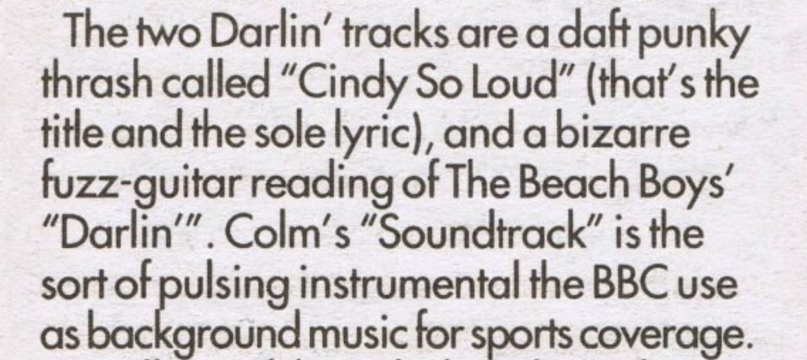
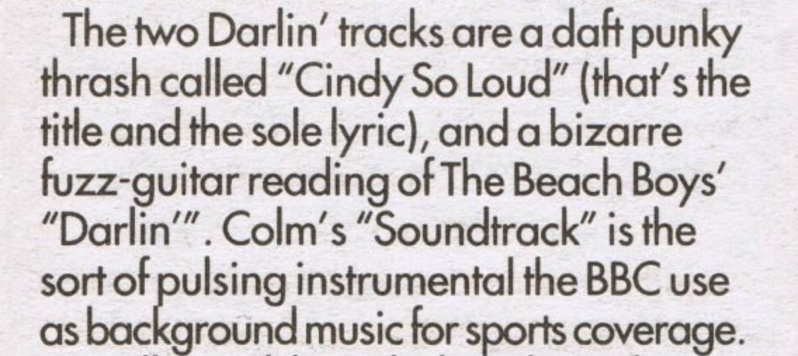

Daft Punk
Discover how the electronic duo, Guy-Manuel de Homem-Christo and Thomas Bangalter, rose to fame starting in the late 1990s as part of the French house movement. Their iconic hits combine elements of house music with funk, techno, disco, rock and synthpop.
1987-1992
Guy-Manuel de Homem-Christo and Thomas Bangalter first met in 1987 at Lycée Carnot, a school in Paris. They spent their time together recording demo tracks with other students at the school. They eventually formed a rock band with their friend, Laurent Brancowitz, in 1992. The band, Darlin', was named after a song by The Beach Boys of the same name, which they often did covers of during their live shows. The band's first EP received a negative review that called their musical style, daft punky thrash. After Darlin' disbanded, Brancowitz joined the band, Phoenix. Guy-Manuel and Thomas started to make electronic music, using drum machines and synthesizers. Amused by the review, they called themselves, Daft Punk.
at Lycée Carnot, a school in Paris. They spent their time together recording demo tracks with other students at the school. They eventually formed a rock band with their friend, Laurent Brancowitz, in 1992. The band, Darlin', was named after a song by The Beach Boys of the same name, which they often did covers of during their live shows. The band's first EP received a negative review that called their musical style, daft punky thrash. After Darlin' disbanded, Brancowitz joined the band, Phoenix. Guy-Manuel and Thomas started to make electronic music, using drum machines and synthesizers. Amused by the review, they called themselves, Daft Punk.
1993-1999
During a rave at EuroDisney in 1993, Daft Punk handed Stuart Macmillan of Slam, co-founder Soma Quality Recordings, a demo tape which eventually became the basis for their first single, "The New Wave", released a year later. In 1995, they recorded "Da Funk", their first commercial hit single. Over 30,000 copies of the single were sold. In September 1996, Daft Punk signed a deal with Virgin Records to license their music through Daft Trax, their self-made production company. Daft Punk's first show in the U.S. was played at an Even Further event. They played a number of shows across the country throughout the late nineties. Their DJ sets included a wide variety of music styles. They even mixed in vinyl records from their personal collection. In 1997, Daft Punk recorded their debut album, "Homework", in their bedroom which included one of their most popular songs, "Around the World".
1999-2003
Daft Punk started recording their second album, Discovery, in 1998. The group sampled various songs and themes from the late '70s and early '80s to create music with a strong synthpop sound. They wanted to make an album that would allow fans to reconnect with the discovery phase of childhood, when attitudes were more open-minded. When fans first heard the album in 2001, they were stunned at the change in music style. The album was wildly successful, generating a new era of Daft Punk fans. The famous single, "One More Time", was played all throughout major clubs in the UK. "Digitial Love" and "Harder, Better, Faster, Stronger" were both popular on the UK dance charts as well. In 2003, the group worked under the supervision of Leiji Matsumoto , a famous anime creator, to produce a feature-length animated film, "Interstella 5555". The plot of the movie coincides with the tracks featured on Discovery. The album, Daft Club, was released to help promote the film. It featured a set of remixes that had only be accessible through an online membership service they created of the same name.
, a famous anime creator, to produce a feature-length animated film, "Interstella 5555". The plot of the movie coincides with the tracks featured on Discovery. The album, Daft Club, was released to help promote the film. It featured a set of remixes that had only be accessible through an online membership service they created of the same name.
2004-2007
Between September and November in 2004, Daft Punk spent six weeks working on new material. The resulting work became their next album, Human After All, in March 2005. This album received mixed reviews from fans who thought that the songs seemed overly repetitive and hastily recorded. A few singles, like "Robot Rock" and "Technologic", still emerged and did very well on the charts. Daft Punk kicked off their Alive 2006/2007 tour with a single U.S. performance at Coachella to raving fans. They had several festival appearances in Europe throughout the summer and in Japan as well. The duo played the headline festival slot at Lollapalooza festival. They finished their full-fledged North American tour in 2007 with the release of another album, "Alive 2007". At the end of the year, they had a series of shows in Japan and then exclusively in Australia, dubbed as "Never Ever Land"
to raving fans. They had several festival appearances in Europe throughout the summer and in Japan as well. The duo played the headline festival slot at Lollapalooza festival. They finished their full-fledged North American tour in 2007 with the release of another album, "Alive 2007". At the end of the year, they had a series of shows in Japan and then exclusively in Australia, dubbed as "Never Ever Land" . Supporting acts, SebastiAn and Kavinsky, accompanied them at these exclusive shows. These few dates became the fastest selling Daft Punk-related shows to date.
. Supporting acts, SebastiAn and Kavinsky, accompanied them at these exclusive shows. These few dates became the fastest selling Daft Punk-related shows to date.
2007-2011
After the tour, Daft Punk made surprise appearances at various events including the 50th Grammy Awards, performing with Kanye West in 2008. It was the first televised live performance of their entire career. In 2009, they won Grammy Awards for their album, Alive 2007, and the single, "Harder, Better, Faster, Stronger". The duo then announced that they would be working on new material instead of going on tour again. At San Diego Comic-Con, they revealed that they had spent two years composing 24 tracks for the film, Tron: Legacy
for their album, Alive 2007, and the single, "Harder, Better, Faster, Stronger". The duo then announced that they would be working on new material instead of going on tour again. At San Diego Comic-Con, they revealed that they had spent two years composing 24 tracks for the film, Tron: Legacy , orchestrated and arranged by Joseph Trapanese
, orchestrated and arranged by Joseph Trapanese . The orchestral and electronic sounding score was created with an 85-piece orchestra. They appeared in the film as DJ programs
. The orchestral and electronic sounding score was created with an 85-piece orchestra. They appeared in the film as DJ programs wearing their signature helmets. In December 2010, the soundtrack was made available. In October, they made an unexpected appearance during the encore of Phoenix's show at Madison Square Garden, mixing the two groups' songs together.
wearing their signature helmets. In December 2010, the soundtrack was made available. In October, they made an unexpected appearance during the encore of Phoenix's show at Madison Square Garden, mixing the two groups' songs together.
2011-2016
Nile Rodgers and Paul Williams collaborated with Daft Punk on their fourth studio album, Random Access Memories. Giorgio Moroder added a monologue to the album, recorded inside a vocal booth that had a range of microphones from the 60s to present day. While working on RAM in early 2013, Daft Punk announced they would sign over to Columbia Records under Sony Music. Shortly after, they started promoting the launch of their album with billboards
collaborated with Daft Punk on their fourth studio album, Random Access Memories. Giorgio Moroder added a monologue to the album, recorded inside a vocal booth that had a range of microphones from the 60s to present day. While working on RAM in early 2013, Daft Punk announced they would sign over to Columbia Records under Sony Music. Shortly after, they started promoting the launch of their album with billboards . In April, they rolled out a series of documentary videos through the official album website. The album finally released in May. Daft Punk's first UK No. 1 single was "Get Lucky". Spotify reported that "Get Lucky" had become the most-streamed new song in the platform's entire history. The album won Best Dance Album, Album of the Year and Best Engineered (Non-Classical) Album at the 56th Annual Grammy Awards . They won Record of the Year for "Get Lucky" and Best Pop Duo/Group Performance. In 2015, a documentary on Daft Punk was released worldwide called "Daft Punk Unchained" that reflects on the duo's success and history.
. In April, they rolled out a series of documentary videos through the official album website. The album finally released in May. Daft Punk's first UK No. 1 single was "Get Lucky". Spotify reported that "Get Lucky" had become the most-streamed new song in the platform's entire history. The album won Best Dance Album, Album of the Year and Best Engineered (Non-Classical) Album at the 56th Annual Grammy Awards . They won Record of the Year for "Get Lucky" and Best Pop Duo/Group Performance. In 2015, a documentary on Daft Punk was released worldwide called "Daft Punk Unchained" that reflects on the duo's success and history.
2016-2017
During an interview with Billboard in 2016, the executive vice president of Republic Records announced that Daft Punk was collaboration with The Weeknd on new music. The track, "Starboy", emerged a few months later featuring Daft Punk. It became the duo's first No. 1 U.S. hit. In November, the second track between the two came out called, "I Feel It Coming". Near the end of 2016, rumors started to spread that there would be a possible Alive 2017 tour. The duo has yet to make a statement about any future show dates. Their fans eagerly await their return.